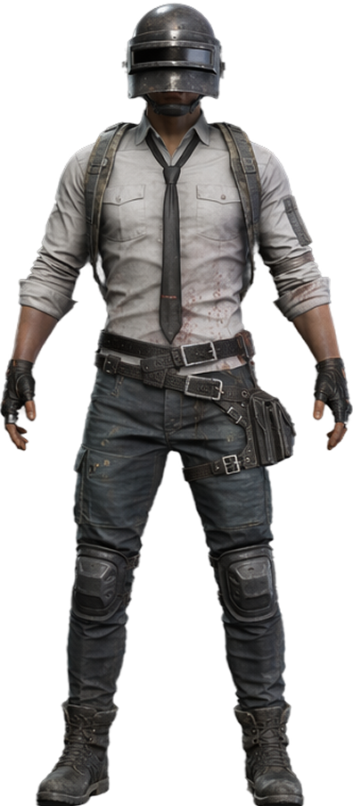
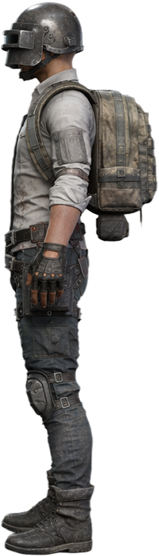
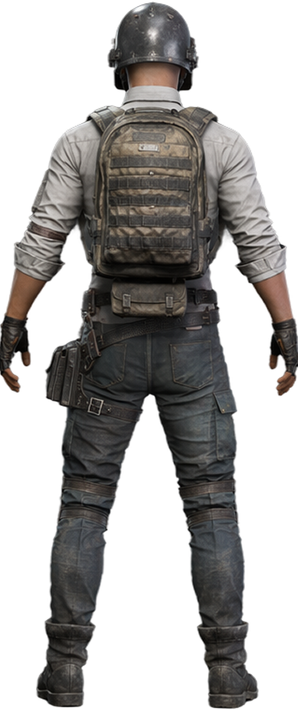
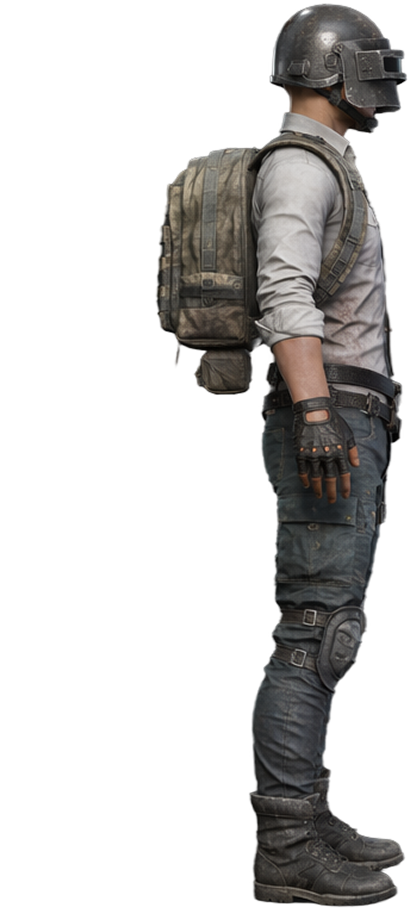

01
PROMPT
EVERYTHING START FROM SOME WORDS
What do you want to design?
02
IMAGE
TURN A SIMPLE IDEA INTO STUNNING CONCEPT ART




03
3D
Generate production-ready 3D models automatically.
04
ANIMATION
Bring your character to life with AI-powered animation.